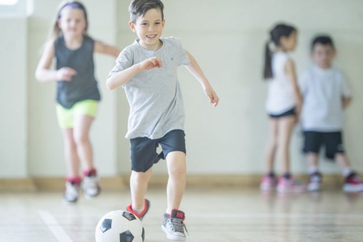
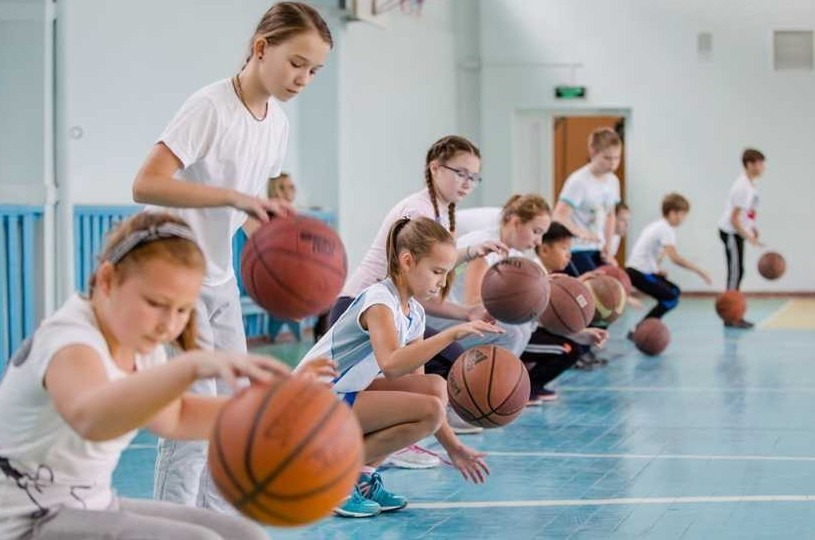
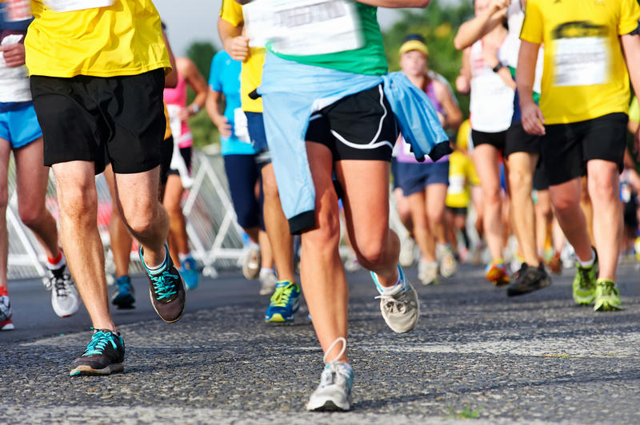
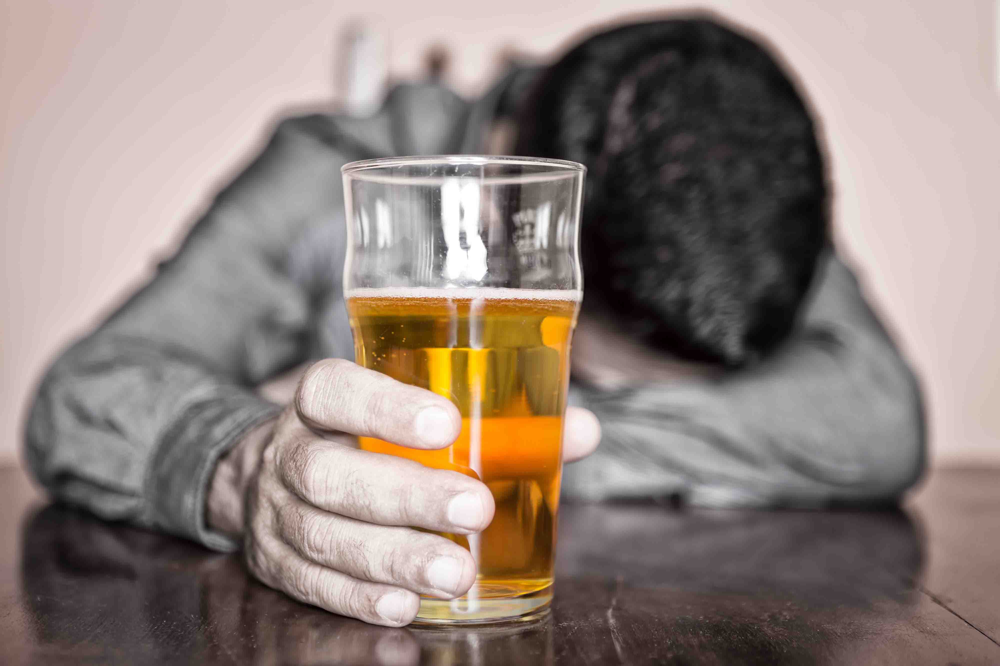
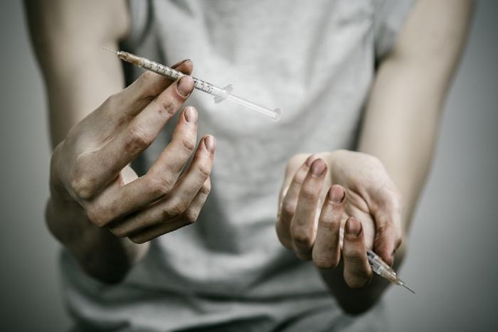
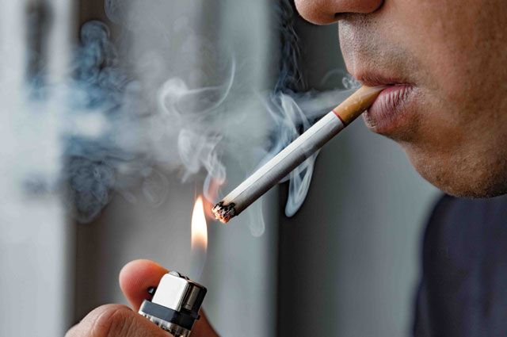

Тема: "Здоров ли я?"
Ученик: Тимофей Барсук
Класс: 9-А
Преподаватель: Владимир Николаевич Коржов
Классный руководитель: Коваленка Ольга Ивановна
Учреждение: Общеобразовательная школа «Зеленогорская Средняя школа»
Здоровье – ни с чем несравнимая ценность. Каждому человеку присуще желание быть сильным и здоровым.
Ученые считают, что если принять условно уровень здоровья за 100%, то на 20% он зависит от наследственных факторов,
20% - от действия окружающей среды, 10% - от деятельности системы здравоохранения, а остальные 50% - зависят от самого человека, от того образа жизни, который он ведет.
А поскольку именно в раннем детстве, дошкольном и школьном возрасте формируется здоровье человека, то ясна роль школы в этом вопросе.
Мало кто из нас в суматохе дней, в бешеном потоке нынешнего времени думает о своем здоровье. Лишь когда валит с ног болезнь или приходит старость, мы начинаем думать о беспечно прожитых годах. Мы говорим друг другу стандартный набор пожеланий: "Здоровья! Счастья! Долгих лет! Удачи!" И тут же забываем о них.
А здоровье - это сокровище, которое нужно беречь ежедневно. Очень часто с экрана телевизора, в средствах массовой информации мы слышим выражение «Я веду здоровый образ жизни», «Необходимо приобщать к здоровому образу жизни», «Чтобы увеличить среднюю продолжительность жизни необходимо приобщать людей к здоровому образу жизни».
Но что же все таки заключает в себе это понятие, как современный школьник оценивает его и придерживается ли он правил ЗОЖ и посвящен мой проект.
Актуальность проекта. Здоровье человека является важнейшей ценностью жизни и зависит от множества факторов. Ныне преобладает мнение, что здоровье народа на 50% определяется образом жизни, на 20% – экологическими; на 20% – биологическими (наследственными) факторами и на 10% – медициной.
Следовательно, если человек ведет ЗОЖ, то все это предопределяет на 50% высокий уровень его здоровья. Особую актуальность это приобретает в подростковой и молодежной среде – потенциально наиболее активной части населения.
Как ни банально это звучит, но от того, насколько здорова наша молодёжь зависит будущее России. Организация здорового образа жизни россиян является одной из составляющих национальной безопасности страны, развитие физической культуры и спорта поддерживается на уровне президента России.
Именно в период школьной жизни у детей формируются их пищевые привычки, отношение к двигательному режиму, когда еще можно предотвратить многие факторы риска основных хронических неинфекционных заболеваний. С одной стороны, детский возраст – это время поиска независимости, первых ошибок, с другой стороны –это время готовности человека к обучению и восприятию полезных советов.
Каждому школьнику необходимо быть не только теоретически подготовленным в области рационального питания, и в области спорта, в области борьбы с вредными привычками, но и на практике следовать правилам здорового образа жизни, то есть «Иметь привычку здорового образа жизни».
Данный проект создан с намерением изменить существующее отношение к своему здоровью. Направлен на укрепление здоровья. Проект углубляет у учащихся основные сведения о здоровом образе жизни, о факторах, влияющих на здоровье, на активизацию знаний по сохранению своего здоровья.
Цель проекта: формирование у обучающихся потребности в здоровом образе жизни, понимания изначальности и необходимости здоровья, обучение способам его сохранения и укрепления;
Задачи проекта:Здоровый образ жизни – совокупность различных оздоровительных мероприятий в жизни человека, направленный на профилактику болезней и укрепление здоровья.
Что же входит в само понятие здоровый образ жизни? По мнению учащихся 8-9 классов МБОУ "Зеленогорская СШ"
в понятие «здоровый образ жизни» входят следующие компоненты:
Питание – средство поддержания жизни, роста и развития, здоровья и высокой работоспособности человека. Нерациональное питание приводит к нарушению обмена веществ и расстройству функционального состояния систем организма.
Что же такое "Правильное питание?"
Правильное питание – это сбалансированное питание с поступлением всех необходимых веществ, углеводов и клетчатки, нужного количества витаминов, минеральных веществ и микроэлементов. А также - ограничение поступления вредных веществ.
Основные принципы правильного питания:
1. Энергетическая ценность пищи должна соответствовать энергетическим затратам организма.
2. Сбалансированность рациона, т.е. соответствие химического состава пищевых веществ физиологическим потребностям организма.
3. Правильный режим питания.
Наука накопила немало сведений о правильном питании, они известны далеко не каждому.
Каждому человеку надо знать несколько постулатов о правильном питании:
Под двигательной активностью понимается сумма всех движений, производимых человеком в процессе своей жизнедеятельности. Это эффективное средство сохранения и укрепления здоровья, гармонического развития личности, профилактики заболеваний.
Непременной составляющей двигательной активности являются регулярные занятия физической культурой и спортом. Двигательная активность благотворно влияет на становление и развитие всех функций центральной нервной системы: силу, подвижность и уравновешенность нервных процессов.
Систематические тренировки делают мышцы более сильными, а организм в целом более приспособлен к условиям внешней среды. Под влиянием мышечных нагрузок увеличивается частота сердцебиений, мышца сердца сокращается сильнее, повышается артериальное давление. Это ведет к функциональному совершенствованию системы кровообращения.
Во время мышечной работы увеличивается частота дыхания, углубляется вдох, усиливается выдох, улучшается вентиляционная способность легких. Интенсивное полное расправление легких ликвидирует в них застойные явления и служит профилактикой возможных заболеваний.
Двигательная активность является ведущим фактором оздоровления человека, т.к. направлена на стимулирование защитных сил организма, на повышение потенциала здоровья. Полноценная двигательная активность является неотъемлемой частью здорового образа жизни, оказывающей влияние практически на все стороны жизнедеятельности человека.
Личная гигиена – это неотъемлемая часть общечеловеческой культуры. Именно соблюдение правил личной гигиены осознанно и отличает каждого из нас от животных.
Личная гигиена — совокупность гигиенических правил, выполнение которых способствует сохранению и укреплению здоровья человека. Личная гигиена включает общие гигиенические правила, одинаковые для лиц любого возраста: правильное чередование умственного и физического труда, занятия физкультурой, регулярные приемы полноценной пищи, чередование труда и активного отдыха, полноценный сон.
К личной гигиене в узком понимании относятся гигиенические требования к содержанию в чистоте тела, белья, одежды, жилища, а также соблюдение чистоты при приготовлении пищи. Первоочередным является соблюдение чистоты тела.
Одним из важнейших постулатов личной гигиены является уход за кожным покровом.
Это необходимо делать не только для привлекательного внешнего вида, но и для здоровья.
Кожа является одним из крупнейших органов в человеческом теле. Причем кожа еще по количеству выполняемых функций стоит на одном из первых мест в организме. Так, кожа отвечает за терморегуляцию, через нее в организм попадает кислород, через кожу в кровь попадают питательные вещества, кожа – это важнейший из органов чувств.
У здорового человека кожа чистая и гладкая. Появление на коже каких-либо прыщей, покраснений или изъязвлений говорит о неблагополучии всего организма. Поэтому необходимо постоянно следить за состоянием своей кожи.
Необходимо ежедневно принимать теплый душ с использованием жесткой мочалки и мыла. Не носить нательное белье грязным и не стиранным. Не пытаться самостоятельно вскрывать нарывы или давить угри. Нужно выбирать белье и одежду из комфортных материалов. Это может быть не обязательно чистый хлопок, многие современные материалы не уступают хлопку по всем параметрам. Выходя на сильный мороз, надевать варежки и обрабатывать открытые участки кожи специальными жирными кремами.
Гигиена полости рта – это очень важный компонент личной гигиены. Если зубы Ваши не в порядке, то страдает весь организм. При наличии во рту очагов кариеса, при пародонтите или пародонтозе инфекция легко распространяется и в носовые пазухи, и в миндалины, и в почки. Поэтому регулярно дважды в день чистите зубы. Для этого используйте подходящую для себя зубную пасту и щетку.
Если у Вас нет возможности почистить зубы после очередного приема пищи, пополощите рот, хотя бы чистой водой. Желательно удалить остатки пищи с использованием зубной ниточки или зубочистки. Один раз в шесть месяцев следует посещать стоматолога.
Личная гигиена невозможна без гигиены волос. Мойте волосы так часто, как необходимо для содержания их в чистоте. Только важно подобрать шампунь. Если волосы настолько жирны, что их необходимо мыть ежедневно, нужно найти именно шампунь для ежедневного использования. Не расчесывать волосы мокрыми, не использовать для этого металлические расчески.
Что такое вредная привычка?
Вредная привычка это автоматически повторяющееся многое число раз действие, причем действие это вредоносное с точки зрения общественного блага, окружающих или здоровья самого человека, который подпал под кабалу вредной привычки.
Курение, наркотики, чрезмерное увлечение алкоголем – это те вредные привычки, которые сказываются губительно не только на здоровье непосредственного потребителя, но и на качество жизни окружающих его люди.
Алкоголизм – самая распространенная вредная привычка, зачастую превращается в серьезное заболевание, характеризующееся болезненным пристрастием к алкоголю (этиловому спирту), с психической и физической зависимостью от него, сопровождающаяся систематическим потреблением алкогольных напитков несмотря на негативные последствия.
Наркомания — хроническое прогредиентное (развитие болезни с нарастанием симптоматики) заболевание, вызванное употреблением веществ-наркотиков. Разные наркотики вызывают разную зависимость. Многие наркотики вызывают и физическую, и психологическую зависимость.
Курение — вдыхание дыма препаратов, преимущественно растительного происхождения, тлеющих в потоке вдыхаемого воздуха, с целью насыщения организма содержащимися в них активными веществами путём их возгонки и последующего всасывания в лёгких и дыхательных путях.
С целью опровержения или принятия гипотезы проекта я предложил учащимся ответить на вопросы анкет, включающих в себя вопросы, охватывающие все аспекты здорового образа жизни:
В анкетировании приняли участие 24 обучающихся 8-9-х классов.
Из 24 опрошенных, 23 смогли точно сформулировать - что означает понятие здоровый образ жизни и что необходимо делать, чтобы вести здоровый образ жизни. Этот факт доказывает правильность первой части нашей гипотезы - Подростки могут грамотно объяснить, что включает в себя понятие Здоровый образ жизни.
На вопрос «Как ты считаешь верно, ли для твоего образа жизни следующее утверждение: «Я веду здоровый образ жизни»?» 23 опрошенных ответили – нет, один не знаю.
Моя двигательная активность
По результатам анкеты №2 можно с уверенностью сказать, что режим дня опрошенных не соответствует норме. Они мало времени уделяют прогулкам (причем в основном потому что не успевают, некоторые гуляют только в выходные дни), мало спят. Много времени проводят у телевизора, компьютера, за уроками и дополнительными занятиями по предметам.
Утреннюю гимнастику не делают все 24 опрошенных, ссылаясь на то, зарядка проводится в школе перед 1 уроком. Показателен и тот факт, что только 3 опрошенных посетили в 1 полугодии все уроки физической культуры, большинство пропустило более 10 уроков по болезни. Зимой школьники совсем не катаются на лыжах (только на уроках физической культуры), 50% опрошенных катаются на коньках не реже 1 раза в неделю (хотя для этого в поселке созданы условия).
Что же касается летнего активного отдыха то можно сказать, что время велосипеда давно прошло. Лишь 3 опрошенных из 24 катаются на велосипеде не реже 3 раз в неделю, многие вообще не признают данный вид активного отдыха. Анализируя данные можно с уверенностью сказать, что двигательная активность у подростков низкая и режим дня современного подростка нельзя назвать правильным.
Правильное питание
Из анкеты №3 мы делаем вывод, что 50% детей не завтракают дома, едят всухомятку, употребляют много газированных напитков, сухарики, чипсы, сладкое. Только 4 человека в обед едят первые блюда, не каждый день употребляют молочные продукты и фрукты, мало едят овощей. Покупая продуты, практически все не задумываются об их пользе или вреде. Все опрошенные понимают, что питаются неправильно.
Личная гигиена
Правила личной гигиены знают все 24 опрошенных , причем по данным анкеты 20 опрошенных полностью соблюдают все правила личной гигиены, лишь 3 человека не всегда успевают делать все правильно(почистить вечером зубы, умыться перед сном), 1 человек не смог дать ответ на данный вопрос.
Вредные привычки
Данные анкеты Вредные привычки показывают, что чуть меньше 50% опрошенных пробовали курить и употреблять спиртные напитки, причем 3 человека курят (не постоянно), 2 человека употребляют спиртные напитки по праздникам. Большинство опрошенных указали, что курить и употреблять спиртное можно лишь с 18 лет, употреблять наркотики нельзя с любого возраста. Радует тот факт, что никто из опрошенных не пробовал наркотики и считает это небезопасно.
Обработав анкеты, сделали вывод, что практически все обучающиеся не соблюдают правила здорового образа жизни.
Обязательно необходимо проводить работу по пропаганде здорового образа жизни, правильном питании, профилактике вредных привычек.
Результаты анкет №2 - №5 доказывают правильность второй части гипотезы - практически нет ни одного ребенка, который полностью соблюдает правила здорового образа жизни.
В нашем случае практически все подростки не соблюдают двигательный режим, режим труда и отдыха, неправильно питаются, лишь два показателя – личная гигиена и вредные привычки у 90% опрошенных соответствую правилам здорового образа жизни. И необходимо проводить работу по профилактике вредных привычек, чтобы у тех опрошенных, которые уже пробовали курить и употреблять спиртное, не возникло повторного желания это сделать.
Выводы по результатам работы над проектом
В ходе работы над проектом и анализа результатов социологического исследования можно с уверенностью сказать, что гипотеза полностью оправдалась. Действительно подростки могут грамотно объяснить, что включает в себя понятие здоровый образ жизни, но практически нет ни одного ребенка, который полностью соблюдает правила здорового образа жизни.
Следование нормам и принципам ЗОЖ — долг каждого разумного человека. Сознательное отношение к собственному здоровью должно стать нормой поведения, главной отличительной чертой культурной, цивилизованной личности.
Качество здоровья касается всех аспектов жизни. Вот почему формирование здорового образа жизни имеет огромнейшее значение. Оно может осуществиться лишь путем создания постоянных привычек. На это уйдет не день и не два. Если вы действительно хотите начать заботиться о своем здоровье, запаситесь терпением. С чего же начать?
Я подготовил буклет для тех, кто хочет начать вести здоровый образ жизни и думаю он может стать инструкцией для каждого школьника и даже взрослого.
Тема формирования здорового образа жизни у подрастающего поколения очень актуальна, а в наше время особенно, поскольку с каждым годом увеличивается количество учащихся, имеющих проблемы со здоровьем, немало учащихся имеют вредные для здоровья привычки, что очень пагубно сказывается, как на духовном, так и физическом состоянии здоровья.
Здоровый образ жизни - общепризнанный, надежный, действенный способ сохранения и укрепления здоровья людей.
Для написания данной работы были использованы ресурсы Сети Интернет
Сайт делали: